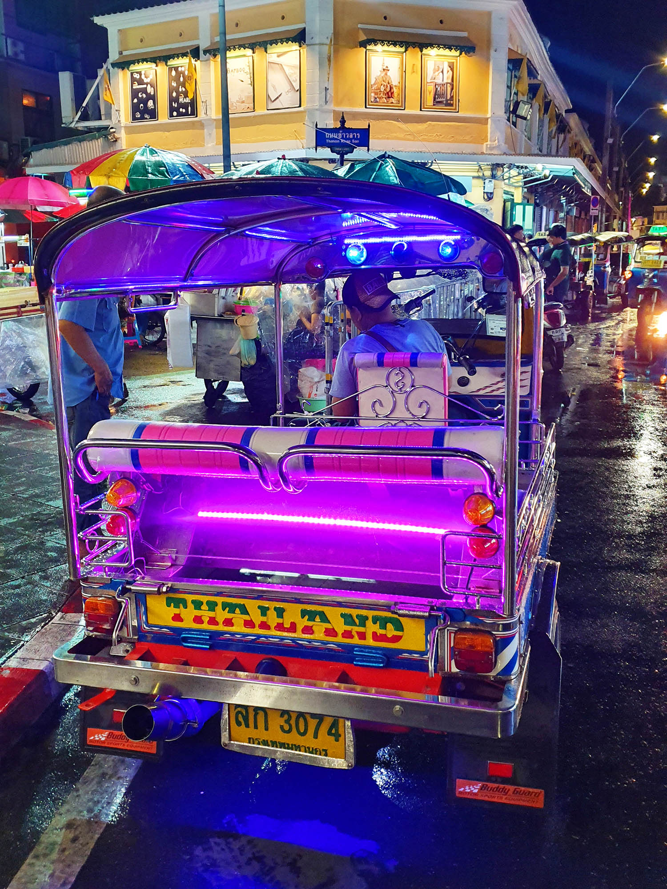
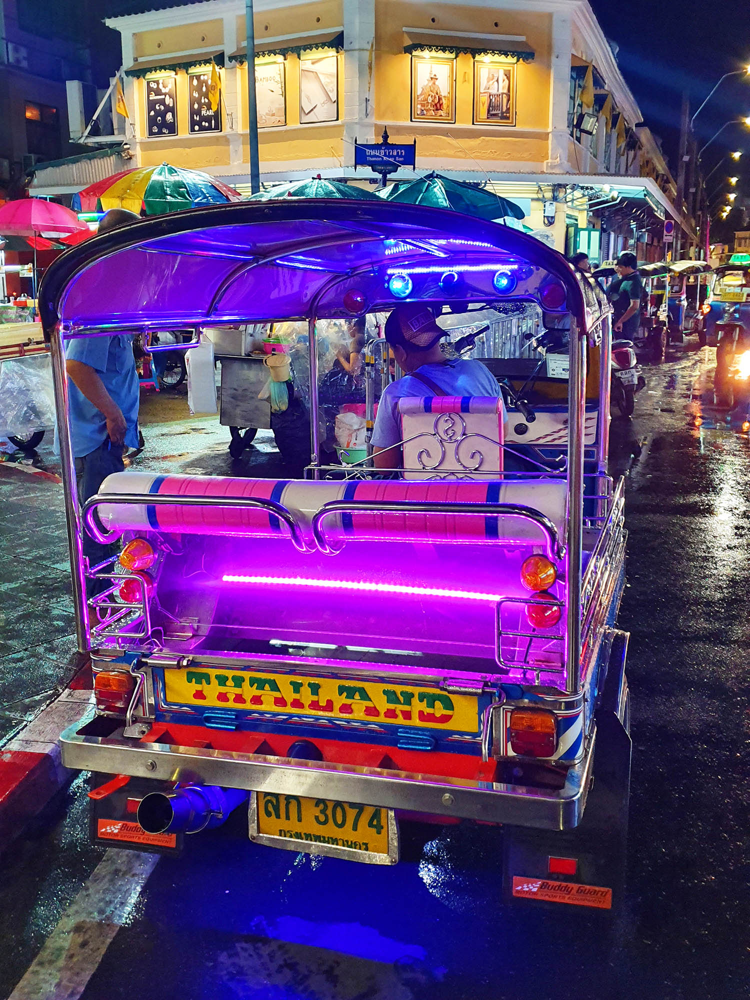
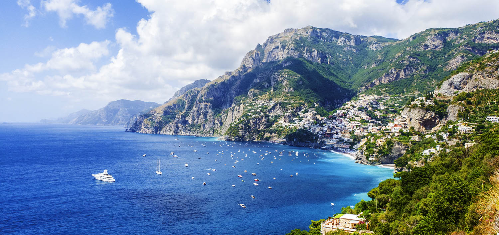
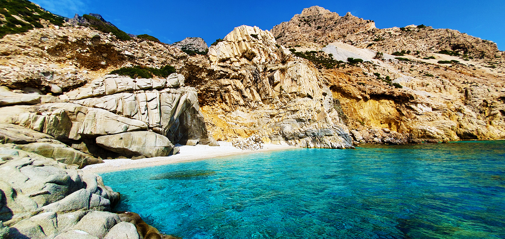
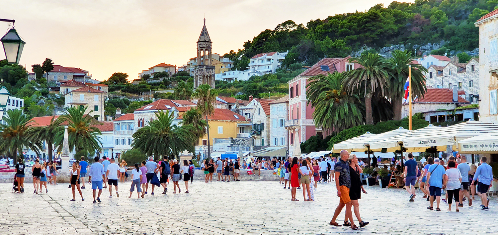
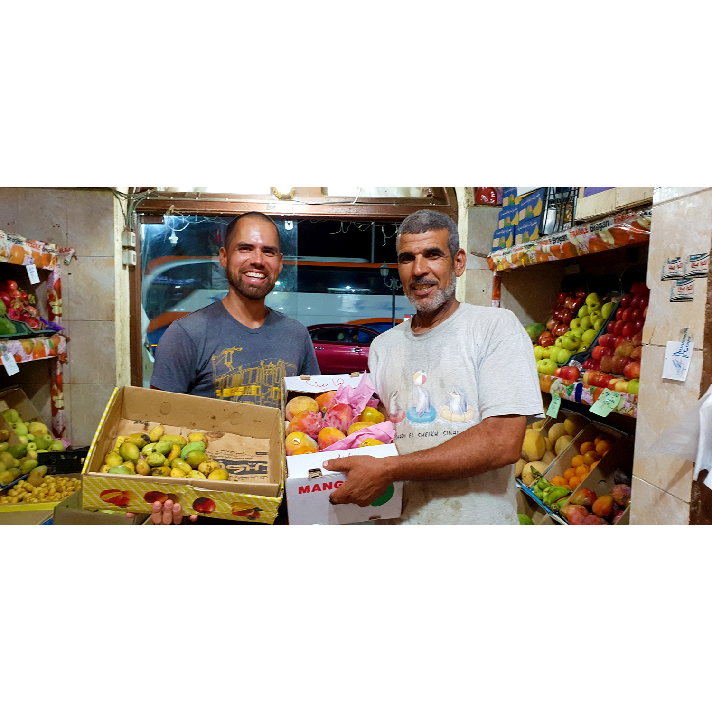
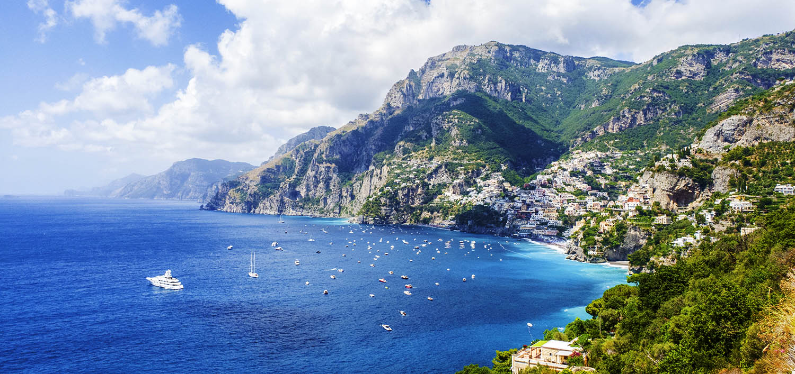
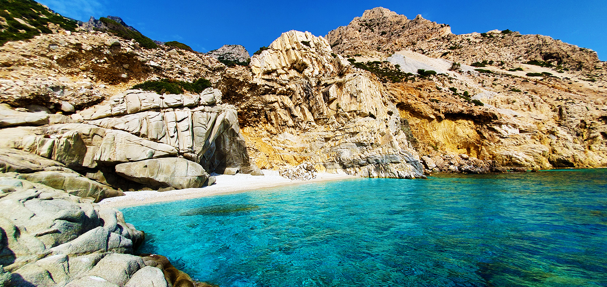
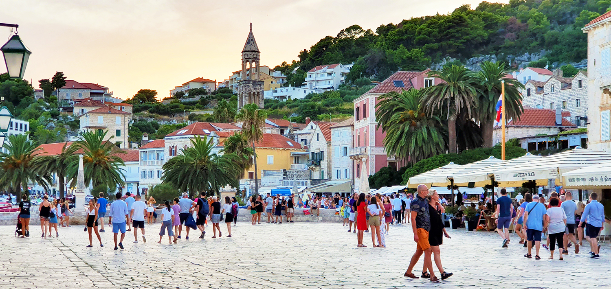
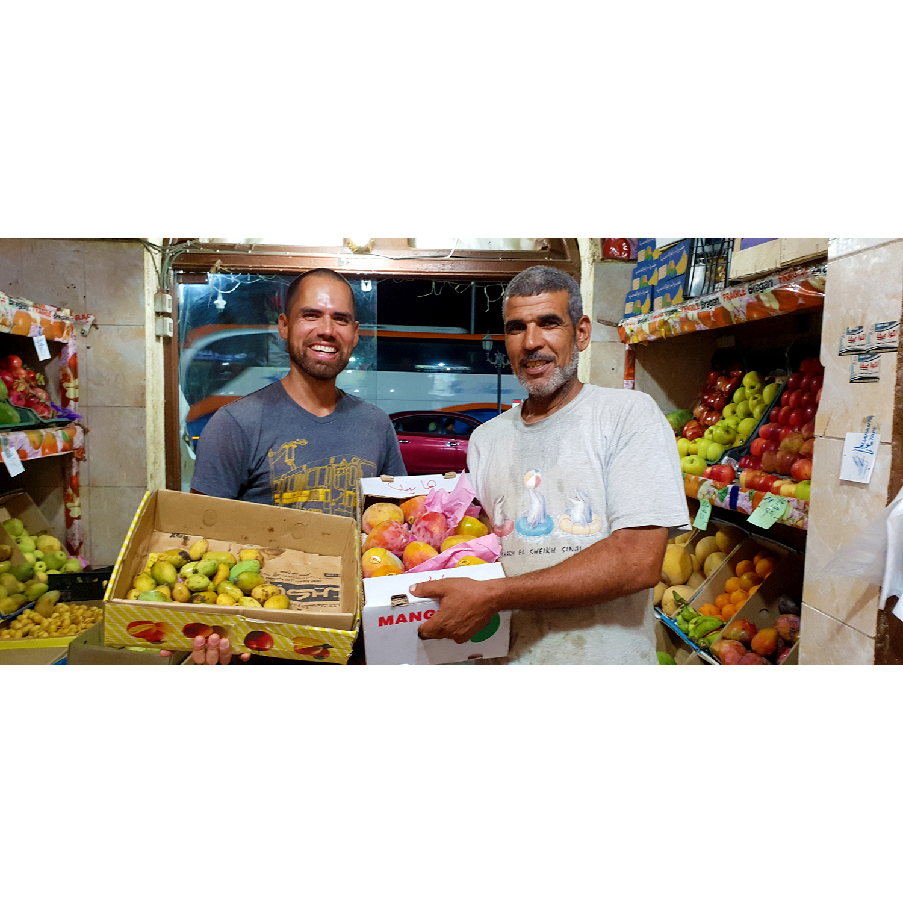

A little bit about me
Hello! My name is Vladimir and I live in San Francisco. What if everyday was and adventure? If that question sparks any wonder of possibilities, well let one of those possibilities be travel. Travel is fun! It makes your life more rich and full of experiences. I enjoy doing it because I learn a lot about Geography, Politics, people, cultures, nature and food. Not only is learning part of the adventure, but you experience different flavors of food and get to have friends all over the world! You are exposed to all sorts of environments and sometimes you will feel completely out of place, but don't worry its really fun. You feel alive, present and have that kid wonder in you. Aside from all, traveling around the world alone helps develope interdiciplinary skills. And to top it all off, traveling gives the opportunity and possibility of networking around the world!
Tips on Travel
Here are a few guide lines on how to travel safely and cheaply. So the first thing to do is a lot of really good research. Research the country and region that you will visit. Consider the weather. Make sure you check the weather before you go. Don't show up packed with summer clothes and its snowing. Its good to know how the weather is going to be. If you decide to travel extensively for months try to go to places with similiar climates. I personaly prefer warm and hot climates. It is also a good idea to travel light. Preferrably a backpack that you can carry on. I traveled around the world with a 5kg (approx 11 lbs) backpack. Another important thing to bring on your trip is a smartphone. Technology today makes traveling much easier. Make sure that your smartphone is unlocked or jaibroken. Download the following apps and create accounts so you can be prepared while traveling! I suggest setting up your accounts in advance before leaving on the trip.
Helpful Travel Apps
- Currency Converter,
- whatsApp,
- skype,
- venmo,
- lyft,
- uber,
- agoda,
- booking,
- airbnb,
- hostelworld,
- couchsurfing,
- tripAdvisor,
- KAYAK,
- Skyscanner,
- google maps
All of these apps are going to help with research, communication, finance, accomedations and much more. One last tip are the following sites. These sites allow you to find work while you travel anywhere in the world. interdTo some degree this is a form of networking. I am here to talk about how to travel around the world. Traveling is fun! If I took my first trip around the world in 2019. Up until now it was the best time of my life! If you have the opportunity to travel and explore different countries around the world, I say take the opportunity
Additional Tips and Other Online Resources
Another important thing to bting along is an international driving permit. Having it will allow driving different types of motor vehicles like cars, bikes and scooters. You can pick up an international driving permit at a AAA office. You will have to fill out an application and provide two passport photos. Passport photos can be taken at Walgreens. Take a look at the following article it is a great read that provides lots of good information about earning money while traveling. 40 Best Travel Jobs To Make Money Traveling The World Workaway opens the doors to lots of possibilities in the world! Another site worth checking out is WWOOF It is about living and learning about organic farming all over the world. helpx is another similar website similar to workaway and WWOOF. Lasty this article provides ways to travel the world cheap or in some cases free. 20 WAYS TO TRAVEL AROUND THE WORLD FOR CHEAP OR EVEN FREEIn the end you will have created memories that will last a life time! There are several reasons why I enjoy traveling. To begin you feel FREE!
Gallery
 

{kind=link}
{kind=link}

 







{kind=link}
{kind=link}
{kind=link}
{kind=link}
{kind=link}
{kind=link}
{kind=link}
{kind=link}
{kind=link}